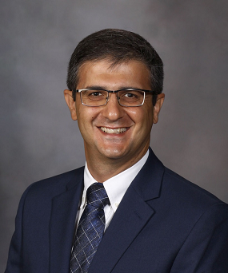

| Biography | | | Education | | | CV | | | Publications | | | Research Projects | | | Book Chapter | | | Photo Gallery | | | Contact |
 |
Ahmad P. Tafti, Ph.D. (Curriculum Vitae)Last Update: April, 12, 2019. Research and Work Interests:AI, machine learning, medical image and biomedical text analysis and understanding tafti[at]ieee[dot]org |
|
I am a Research Associate, proudly working at Mayo Clinic with deep passion for improving healthcare informatics with better patient diagnosis, prognosis, and treatment using big multiple clinical data and novel computational algorithms. I earned my PhD in Computer Science from University of Wisconsin-Milwaukee and since then, I have been on a quest to explore and solve problems that are worth it, and make the most positive impact on people’s lives. I have been successfully leveraging my background in descriptive and predictive machine learning modeling, text and image analysis, and big data analytics to find solutions to a diverse range of problems in healthcare informatics. I am passionate about diverse biomedical data sources along with artificial intelligence methods and their applications in healthcare. My research contributions demonstrate an extensive research experience in conducting computational mechanisms with a key focus on machine learning components and deep learning strategies. My lifetime hobbies have been spending time with my bountiful family, reading, and cycling. My full name is Ahmad Pahlavan Tafti; however I often publish under Ahmad P. Tafti and/or A. P. Tafti. |


What's New:
• Jun. 2019: I have an abstract accepted at AMIA Annual Symposium 2019.
• Apr. 2019: We have a tutorial accepted at NAACL 2019, a top-notch conference in computational linguistics.
• Apr. 2019: I am serving as a grant reviwer in Catalyst Grant Program at UWM Research Foundation.
• Apr. 2019: I became a member at Society for Imaging Informatics in Medicine.
• Apr. 2019: We are now done with Deep Learning Fundamentals and Applications in Medical Informatics Workshop.
• Apr. 2019: Four abstracts accepted at Mayo Clinic Artificial Intelligence Symposium.
• Mar. 2019: I was fortunate to attend OptumLabs bootcamp, started working with massive multi-site clinical data.
• Mar. 2019: Three submissions at AMIA 2019 Annual Symposium.
• Mar. 2019: We have a poster accepted at MedInfo 2019.
• Feb. 2019: We have a paper accepted at IEEE BHI 2019.
• Jan. 2019: I am serving as a speaker at Deep Learning Fundamentals and Applications in Medical Informatics Workshop, Milwaukee, USA, 2019.
• Nov. 2018: I serve as a PC member at IEEE ICHI 2019, Beijing, China, 2019.
• Nov. 2018: I had the honor to serve on the PhD committee of Mojtaba Fathi, who successfully defended his PhD dissertation in an excellent fashion.
• Nov. 2018: I made my personal home page available on GitHub. Thanks, GitHub, to make this charming functionality available to everyone worldwide!
• Oct. 2018: We are organizng an ISMCO special track, namely AI meets Social Media: Integrating AI and Social Media to Advance Cancer Research.
• Aug. 2018: I serve as a Steering Committee member at ISMCO 2019, the first international symposium on mathematical and computational oncology.
• Jul. 2018: I joined Mayo Clinic, and strated working at this amazing academic medical center.
• Apr. 2018: I am serving as a keynote speaker at The Journey from Machine Learning to Deep Learning Workshop, at Marquette University.
• Apr. 2018: We have a poster accepted at IEEE ICHI 2018. An attempt was made to develop a deep 3D multi-scale CNN to boost lung cancer research.
• Feb. 2018: I am serving as a reviewer at AMIA 2018 Annual Symposium.
• Jan. 2018: We have our MCIndoor20000 dataset published at Data in Brief journal.
• Dec. 2017: We have a Podium Abstract accepted at AMIA 2018 Informatics Summit.
• Dec. 2017: We have started fighting against lung cancer, with the use of big and organized clinical data.
• Dec. 2017: I will be the guest speaker at Marshfield Clinic Journal Club, January 2018. I will be presenting "Big Data Deep Learning; What and Why?".
• Dec. 2017: We have a paper published at JMIR Medical Informatics.
• Nov. 2017: We have a paper accepted at SPIE Medical Imaging conference.
• Nov. 2017: I've started serving as a reviwer at Signal Processing journal, Elsevier.
• Oct. 2017: I've started serving as a reviwer at Micron journal, Elsevier.
• Oct. 2017: We have our bigNN paper accepted at IEEE Big Data. Acceptance rate was about 18.7%.
• Sep. 2017: I am the guest speaker at CPCP meeting, University of Wisconsin-Madison, next month!
• Sep. 2017: I am serving as a reviewer at AMIA 2018 Informatics Summit.
• Aug. 2017: The NVIDIA supports our ongoing research on deep learning computational vision. Thanks NVIDIA!
• Jul. 2017: I am awarded NVIDIA GPU Grant for part of my accomplishments on deep learning computational vision. Thanks much NVIDIA!
• May. 2017: I promoted to Associate Research Scientist.
• Mar. 2017: We have a workshop proposal accepted at KDD, the world's largest community for data mining. Please visit bigdas@KDD2017.
• Mar. 2017: We have a paper accepted at MLDM 2017.
• Jan. 2017: I am invited as a keynote speaker to the 4th International Conference on Artificial Intelligence and Pattern Recognition. Canceled at Sep. 2017!
• Jan. 2017: I gave a talk on 3D computer vision at MCRF scientific seminar. You are most welcome to watch the talk online at here.
• Oct. 2016: I have been selected for the "Best Reviewer Award" by The Society of Digital Information and Wireless Communications (SDIWC).
• Oct. 2016: I became the chair of Computer Vision as a Service special track at ISVC 2016.
• Oct. 2016: I became a reviewer for AMIA 2017 Joint Summits on Translational Science.
• Aug. 2016: I became a reviewer for IEEE Journal of Biomedical and Health Informatics.
• Jul. 2016: I joined ISVC 2016 as a program committee member for computer vision area.
• Jul. 2016: We are organizing a special track titled "Computer Vision as a Service" at ISVC 2016. [Call for Papers]
• Jun. 2016: We are organizing a special session titled "Machine Learning on the Cloud" at ACM ICC 2017. [Call for Papers]
• May. 2016: I had a wonderful visit in the Computational Visualization Center at the University of Texas at Austin. Thanks much Dr. Yu and Dr. Bajaj!
• May. 2016: I defended my Ph.D. thesis on 3D SEM Surface Reconstruction: An Optimized, Adaptive, and Intelligent Approach.
• May. 2016: Our paper titled 3DSEM++: adaptive and intelligent 3D SEM surface reconstruction has been published by Micron journal.
• Feb. 2016: I joined IEEE BIZ2016 as a technical reviewer.
• Jan. 2016: I will be TAing CS361 (Software Engineering) and CS595 (Capstone Project) Spring 2016.
• Dec. 2015: The 3DSEM is now available at Harvard Dataverse. Thanks much to Harvard University!
• Nov. 2015: Our paper titled "3DSEM: A 3D Microscopy Dataset" has been accepted to Data in Brief journal.
• Oct. 2015: I joined International Journal of Computer Vision & Signal Processing as an editorial board member.
• Oct. 2015: I joined International Journal of Computer Vision and Image Processing (IJCVIP) as a technical reviewer.
• Oct. 2015: Our paper titled "SeLibCV: A Service Library for Computer Vision Researchers" has been accepted to ISVC 2015.
• Sep. 2015: I joined CRESCO as an editorial board member for three open access journals including AEET, JCSSD, and JITT.
• Sep. 2015: I will be TAing Capstone Project (CS 595), Introductory Java Programming, and Introduction to Engineering Programming for Fall 2015.
• Aug. 2015: I presented my summer project at MCRF Research Symposium 2015. My presentation starts at the time slot 00:54:00 there.
• Aug. 2015: Our paper titled "Recent Adavances in 3D SEM Surface Reconstruction" is published by the Micron journal.
• Jul. 2015: I gave a short talk on "Text Mining and its Applications in Cancer Research" at Marshfield Clinic Research Foundation journal club.
• May. 2015: Our poster on Computer Vision as a Service is accepted by CVPR 2015: Vision Industry and Entrepreneur Workshop (VIEW 2015).
• Apr. 2015: I was fortunate to get the GE Healthcare Honorable Mention Award at UWM Poster Competition 2015.
• Apr. 2015: I had a wonderful visit at Computer Science Department at UW-Madison.
• Apr. 2015: I joined Taylor & Francis Group as a technical reviewer for the Journal of CMBBE: Imaging & Visualization.
• Mar. 2015: A Dataset for our 3D Microscopy Vision project is released.
• Mar. 2015: I got an internship position at Marshfield Clinic Research Foundation for Summer 2015.
• Feb. 2015: I gave a 15 minutes presentation at GE Healthcare Partnering Seminar.
• Jan. 2015: I will be the TA for Capstone Project (CS 595), and Introductory Java Programming (CS 201- Online Section) for Spring 2015.
• Oct. 2014: Our paper on 3D Microscopy Vision is accepted by ISVC 2014.
• Sep. 2014: I will be the TA for Capstone Project (CS 595), and Introductory Java Programming (CS 201- Online Section) for Fall 2014.
• Apr. 2014: I gave a talk in CS Department Group Seminar at UW-Milwaukee.
• Jan. 2014: I will be TAing Introduction to Software Engineering (CS 361), and Introductory Java Programming (CS 201) for Spring 2014.
• Oct. 2013: I will be a technical reviewer for IEEE conferences handled by SDIWC.
• Sep. 2013: I will be a TA for Introduction to Software Engineering (CS 361) and Introductory Java Programming (CS 201) for Fall 2013.
• Jan. 2013: I will be a TA for Introductory Java Programming (CS 201) for Spring 2013.